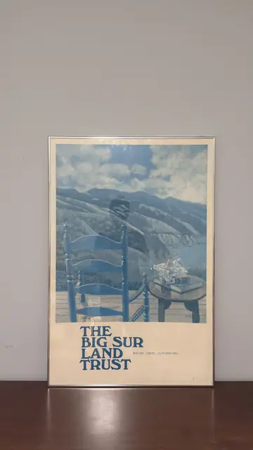

Paintings & Prints
Big Sur Land Trust Vintage Conservation Poster, Signed, Framed
· 1970s-1980s
Price Upon Request

About the Item
A vertical poster reproducing a painting in an almost monochrome blue key: a blue-painted ladder-back chair and small round table with a bowl stand on a plank deck, looking out to layered ridges, a cloud-filled sky and a sliver of ocean where the coastline meets the sea. The handling is flat and stylised, with simplified mountain planes and soft scumbled clouds. Below the image a cream band carries the heavy blue serif lettering THE BIG SUR LAND TRUST with an address line beside it. Medium: offset lithograph poster on paper. Signed lower right of the image area, on the table top. Inscribed on the reverse or mount: THE BIG SUR LAND TRUST; BOX 1645 CARMEL, CALIFORNIA 93921. Condition: Poster paper appears slightly wavy/rippled behind the glass and lightly toned overall; heavy reflection across the upper half; no tears visible.
Details
- Creation Year:
- 1970s-1980s
- Dimensions:
- Height: 36.25 in (92.08 cm)
Width: 24.25 in (61.59 cm)
outside of frame - Medium:
- offset lithograph poster on paper
- Period:
- 20Th
- Condition:
- Offered in the condition shown in the photographs.
- Reference Number:
- VO-99
- Documentation:
- no certificate or label photographed
- Gallery Location:
- THE BIG SUR LAND TRUST; BOX 1645 CARMEL, CALIFORNIA 93921